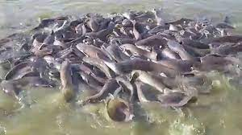

Description et Historique

Historique
: Les silures (poissons-chats) sont intimement liés au mythe fondateur de la ville. Ils sont considérés comme les génies protecteurs de la communauté Bobo Mandarè.
Description
Présents dans les marigots de Houet ou au site mystique de Dafra, ces poissons sont sacrés. Il est strictement interdit de les pêcher ou de les manger. Les habitants leur font des offrandes pour attirer la chance.